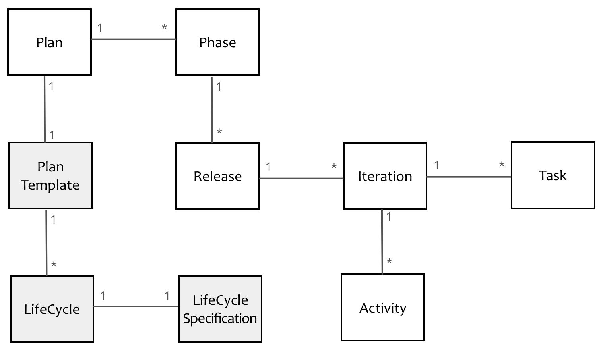
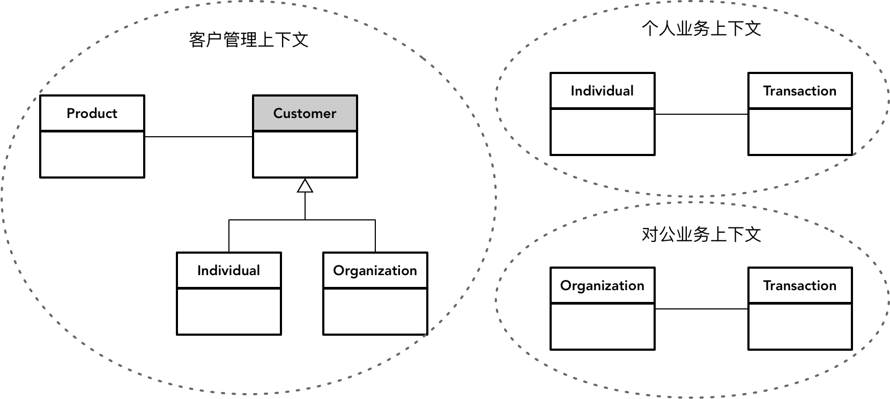
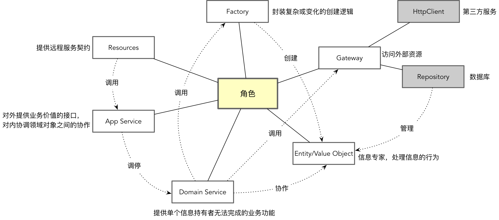
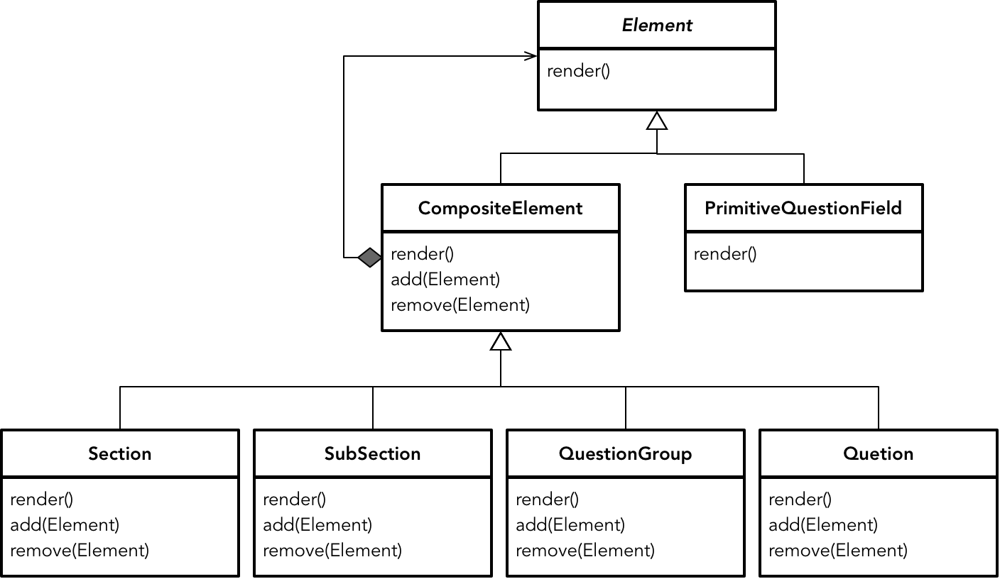

- 001 「战略篇」访谈 DDD 和微服务是什么关系？.md.html
- 002 「战略篇」开篇词：领域驱动设计，重焕青春的设计经典.md.html
- 003 领域驱动设计概览.md.html
- 004 深入分析软件的复杂度.md.html
- 005 控制软件复杂度的原则.md.html
- 006 领域驱动设计对软件复杂度的应对（上）.md.html
- 007 领域驱动设计对软件复杂度的应对（下）.md.html
- 008 软件开发团队的沟通与协作.md.html
- 009 运用领域场景分析提炼领域知识（上）.md.html
- 010 运用领域场景分析提炼领域知识（下）.md.html
- 011 建立统一语言.md.html
- 012 理解限界上下文.md.html
- 013 限界上下文的控制力（上）.md.html
- 014 限界上下文的控制力（下）.md.html
- 015 识别限界上下文（上）.md.html
- 016 识别限界上下文（下）.md.html
- 017 理解上下文映射.md.html
- 018 上下文映射的团队协作模式.md.html
- 019 上下文映射的通信集成模式.md.html
- 020 辨别限界上下文的协作关系（上）.md.html
- 021 辨别限界上下文的协作关系（下）.md.html
- 022 认识分层架构.md.html
- 023 分层架构的演化.md.html
- 024 领域驱动架构的演进.md.html
- 025 案例 层次的职责与协作关系（图文篇）.md.html
- 026 限界上下文与架构.md.html
- 027 限界上下文对架构的影响.md.html
- 028 领域驱动设计的代码模型.md.html
- 029 代码模型的架构决策.md.html
- 030 实践 先启阶段的需求分析.md.html
- 031 实践 先启阶段的领域场景分析（上）.md.html
- 032 实践 先启阶段的领域场景分析（下）.md.html
- 033 实践 识别限界上下文.md.html
- 034 实践 确定限界上下文的协作关系.md.html
- 035 实践 EAS 的整体架构.md.html
- 036 「战术篇」访谈：DDD 能帮开发团队提高设计水平吗？.md.html
- 037 「战术篇」开篇词：领域驱动设计的不确定性.md.html
- 038 什么是模型.md.html
- 039 数据分析模型.md.html
- 040 数据设计模型.md.html
- 041 数据模型与对象模型.md.html
- 042 数据实现模型.md.html
- 043 案例 培训管理系统.md.html
- 044 服务资源模型.md.html
- 045 服务行为模型.md.html
- 046 服务设计模型.md.html
- 047 领域模型驱动设计.md.html
- 048 领域实现模型.md.html
- 049 理解领域模型.md.html
- 050 领域模型与结构范式.md.html
- 051 领域模型与对象范式（上）.md.html
- 052 领域模型与对象范式（中）.md.html
- 053 领域模型与对象范式（下）.md.html
- 054 领域模型与函数范式.md.html
- 055 领域驱动分层架构与对象模型.md.html
- 056 统一语言与领域分析模型.md.html
- 057 精炼领域分析模型.md.html
- 058 彩色 UML 与彩色建模.md.html
- 059 四色建模法.md.html
- 060 案例 订单核心流程的四色建模.md.html
- 061 事件风暴与业务全景探索.md.html
- 062 事件风暴与领域分析建模.md.html
- 063 案例 订单核心流程的事件风暴.md.html
- 064 表达领域设计模型.md.html
- 065 实体.md.html
- 066 值对象.md.html
- 067 对象图与聚合.md.html
- 068 聚合设计原则.md.html
- 069 聚合之间的关系.md.html
- 070 聚合的设计过程.md.html
- 071 案例 培训领域模型的聚合设计.md.html
- 072 领域模型对象的生命周期-工厂.md.html
- 073 领域模型对象的生命周期-资源库.md.html
- 074 领域服务.md.html
- 075 案例 领域设计模型的价值.md.html
- 076 应用服务.md.html
- 077 场景的设计驱动力.md.html
- 078 案例 薪资管理系统的场景驱动设计.md.html
- 079 场景驱动设计与 DCI 模式.md.html
- 080 领域事件.md.html
- 081 发布者—订阅者模式.md.html
- 082 事件溯源模式.md.html
- 083 测试优先的领域实现建模.md.html
- 084 深入理解简单设计.md.html
- 085 案例 薪资管理系统的测试驱动开发（上）.md.html
- 086 案例 薪资管理系统的测试驱动开发（下）.md.html
- 087 对象关系映射（上）.md.html
- 088 对象关系映射（下）.md.html
- 089 领域模型与数据模型.md.html
- 090 领域驱动设计对持久化的影响.md.html
- 091 领域驱动设计体系.md.html
- 092 子领域与限界上下文.md.html
- 093 限界上下文的边界与协作.md.html
- 094 限界上下文之间的分布式通信.md.html
- 095 命令查询职责分离.md.html
- 096 分布式柔性事务.md.html
- 097 设计概念的统一语言.md.html
- 098 模型对象.md.html
- 099 领域驱动设计参考过程模型.md.html
- 100 领域驱动设计的精髓.md.html
- 101 实践 员工上下文的领域建模.md.html
- 102 实践 考勤上下文的领域建模.md.html
- 103 实践 项目上下文的领域建模.md.html
- 104 实践 培训上下文的业务需求.md.html
- 105 实践 培训上下文的领域分析建模.md.html
- 106 实践 培训上下文的领域设计建模.md.html
- 107 实践 培训上下文的领域实现建模.md.html
- 108 实践 EAS 系统的代码模型.md.html
- 109 后记：如何学习领域驱动设计.md.html
- 捐赠
047 领域模型驱动设计
领域模型驱动设计自然是以提炼和转换业务需求中的领域知识为设计的起点。在提炼领域知识时，没有数据库的概念，亦没有服务的概念，一切围绕着业务需求而来。尤其是领域建模的分析阶段，应该只关注问题域，模型表达的是业务领域的概念，而非实现的概念。领域分析模型应由领域专家作为主导，甚至由领域专家创建，完全独立于软件开发技术。Martin Fowler 在《分析模式》中就提到：“这种独立性可以使技术不会妨碍对问题的理解，并使得最终的模型能够适用于所有类型的软件技术。”
在分析之初，不考虑任何技术实现手段，一切围绕着领域知识进行建模，是领域模型驱动设计的关键。
领域分析模型与抽象
领域分析模型必须遵循统一语言，由领域概念及它们之间的关系构成。从与现实世界的映射来看，领域概念可以分为显式和隐式两种类型。显式概念是在现实世界中被明确无误地表达出来的，例如电商领域中的商品、顾客、购物车、订单等概念。隐式概念往往隐藏在领域逻辑中，不被明确地表达，但这并不意味着不重要，例如电商领域中促销模型的促销产品（Promotion Product），就是通过对促销领域的深度分析挖掘出来的领域概念。隐式概念的获得往往意味着对领域理解的一次突破。
领域分析模型中的每个领域概念其实都是对现实世界中业务概念的一次抽象。抽象具有不同的层次，这取决于你对业务概念粒度和特征的理解。不同的抽象层次传递了不同的知识。抽象层次越高，需要关注的概念就越少，从而让分析模型变得更简单。然而，高度的抽象亦可能遮掩住一些存在差异的业务事实，使得模型丢失一些重要而具体的领域知识。例如，我在《领域驱动战略设计实践》中建立的项目管理领域模型，就是通过对瀑布、RUP、XP 和 Scrum 这四种不同的软件开发过程进行抽象获得的：

模型中的一个抽象概念可以代表多个领域概念，从而使得整个领域模型化繁为简，并保持了更好的可扩展性。上述模型中的 Iteration 既代表了 XP 的一次迭代，也代表了 Scrum 中的一次冲刺（Sprint）。倘若未来还有别的软件开发过程提供了其他代表迭代的概念，则 Iteration 的抽象概念仍然足以涵盖新的知识，保证了模型的可扩展。同时，这个抽象概念并不能直观地体现 Scrum 冲刺的含义与特征，丢失了之所以命名为冲刺的关键语义。因此，在针对领域进行分析建模时，需要把握好抽象的分寸，既要传递准确的领域知识，又不至于让整个分析模型变得过于庞大，以至于阻碍领域专家和开发团队之间的交流。
在对领域概念进行抽象时，需要结合具体的业务场景进行分析。不同的业务场景会带来观察领域概念视角的差别，这也是领域驱动设计之所以要引入限界上下文的原因之一。
例如，在银行系统中，管理客户的业务场景包含了个人（Individual）和组织（Organization）两个抽象概念。为了降低管理客户的复杂度，可以在这两个概念之上建立更高的一层抽象概念：客户（Customer）。当客户购买了一种金融产品（Product）后，为了更好地管理客户，需要建立客户与产品之间的关系。
此时，引入的客户抽象概念就可以抹去个人客户与组织客户之间的差异，使得我们无需分别维护个人、组织与产品三者之间的关系。同样是客户购买了金融产品，在交易业务场景中，由于个人业务与对公业务的差异较大，具有完全不同的业务流程和业务规则，如果仍然使用客户抽象来建立分析模型，就会因为过度抽象带来不必要的间接层，为设计模型带来错误的指导，例如创建了不合理的继承体系，并在实现的代码中引入频繁的强制类型转换。这里所谓的“场景”，可以理解为限界上下文，它维护了领域模型的边界：

既然建立领域分析模型与抽象息息相关，那么明确抽象的意义和它要求的能力，可以指导设计师如何进行分析建模。抽象是我们观察客观世界的一种方法，从大量的具体事物中抽取和概括它们共同的方面、本质属性与关系。在运用抽象思维观察客观世界时，可以通过分类的方式辨别客观事物。这种方式需要抓住一类事物迥异于其他事物的核心特征，并将其定义为该事物的内在本质，从而形成一组概念的类别集合。
例如，生物学家将有生命的个体定义为“生物”，这类事物的内在本质是生物能够新陈代谢及遗传。整个世界由生物和非生物构成，这就是生物学家通过抽象分析获得的“世界观”。生物学家还为生物定义了多个抽象层次，依次为域、界、门、纲、目、科、属和种。显然，抽象的层次越低，属于同一类别的生物共同特征就越多。这种分类法需要对客观世界具有由现象到本质的归纳能力。
观察客观世界的另一种抽象方法是提取共同特征。这种抽象方法不需要去探究内在的原理与本质，仅仅通过观察事物表面的特征进行抽象。通过寻找一些共同的特征，我们甚至可以将一些风马牛不相及的事物抽象到同一个概念下。例如，麻雀、飞机、蝙蝠和竹蜻蜓完全属于不同的类别，但它们却具有一个完全相同的特征——可以飞行。这种共同特征提取法强调从可变性中找到共性的概况能力。
考察一个建模分析人员的水平，其实就取决于归纳与概括这两种抽象能力。在分析建模过程中，我们运用抽象方式的不同，得到的分析模型也将有所不同。例如，分析新闻领域，我们寻找到文章（Article）、视频（Vedio）和音频（Audio）等相对具体的概念。如果从新闻页面的角度观察这些概念，可以发现这些概念都具备共同特征：为页面提供内容（Content）。由此得到的抽象模型为：
如果要对这些概念进行分类，就能辨别出文章与视频、音频并不属于同一个分类维度。我们可以将新闻网站发布的内容皆认为是文章，文章的内容却可以由文本、音频与视频混合组成。这时，文本、音频与视频其实都属于媒体（Media）分类：
在抽象模型时，还要注意控制抽象的范畴，否则会导致创建太多的抽象，形成错误的继承体系。当我们创建父类与子类的继承体系时，可能会过多考虑子类对父类的重用，却忽略了继承其实是一种“差异化设计（Design by Difference）”的体现。在对领域概念进行抽象时，我们应该仅针对存在差异的部分进行所谓的“泛化”，并由不同的子类去实现各自差异的部分。不要扩大局部差异，导致对整体概念进行错误的抽象。
例如，软件公司的员工分为需求分析人员、架构师、开发人员和测试人员。在建模时，我们要注意这里的员工分类其实扩大了差异。虽然需求分析人员、架构师、开发人员和测试人员都是（is）员工，但他（她）们之间的差异并非员工的差异，而是角色的差异：
这种抽象机制其实体现了继承和组合的区别。它提示我们在分析建模时不要因为概念关系上存在“是（is）”的关系时，就主观地做出抽象的判断，而需要深挖这些概念之间的不变性与可变性，然后从变化的部分寻找到抽象的特征。这种抽象甚至不仅仅包括对概念的抽象，也可以是对行为的抽象。对行为的抽象往往可以提高领域模型的设计质量，因此我将这一抽象放到了领域设计建模过程中。
领域设计模型与设计要素
从领域分析模型到领域设计模型，是对代表领域知识的模型概念的进一步甄别与完善。Eric Evans 在领域驱动设计中提出的设计要素在领域设计模型中扮演了非常重要的角色。这些设计要素既是对模型的约束，也是对设计的约束，可以认为是领域驱动设计中的设计模式。下图是 Eric Evans 描绘的战术设计要素：
领域驱动设计提出的这些设计要素在设计模型中扮演了非常重要的角色。首先，我们可以进一步将分析模型中的领域概念定义为实体（Entity）或值对象（Value Object）。二者的区分有助于管理领域对象的生命周期，通过引入不变的值对象还可以减少并发的成本。确定聚合（Aggregate）的边界，并明确它包含哪些实体与值对象，使得领域模型可以遵守业务规则中的不变量（Invariable）约束和一致性约束。领域事件（Domain Event）的识别，可以帮助我们确认业务流程中那些已经发生的事实（Fact），并围绕着领域事件确定事件的发布者与订阅者，从而让这些概念能够流动起来。通过资源库（Repository）与工厂（Factory）模式的运用，有利于管理领域对象的生命周期，并通过对资源库的抽象保证领域逻辑不受数据库持久化机制的影响。
实体、值对象、领域服务与领域事件是从设计角度对领域设计对象做出的分类，另一种分类方式则从履行职责的角度，探讨了领域对象在业务场景中协作时各自扮演的角色。这一分类来自 Rebecca Wirfs-Brock 的著作《对象设计：角色、职责和协作》。在书中，她总结了对象角色的构造性（Role Stereotypes）：
“在一个应用系统中，各种角色都具有自身的特征，这些特征就是构造型（Stereotypes）。……从高层概念进行思考，忽略具体行为来识别对象的构造型，是非常有必要的。通过简化和特征化描述，我们能够轻易地辨明对象的角色。”
下图列出了主要的角色构造型：
角色构造型可以用来集中描述对象的职责，以下是 Rebecca 对这些构造型职责的简单描述：
- 信息持有者：掌握并提供信息
- 服务提供者：执行工作，通常为其他对象提供服务
- 构造者：维护对象之间的关系，以及与这些关系相关的信息
- 协调者：通过向其他对象委托任务来响应事件
- 控制器：进行决策并指导其他对象的行为
这两种分类并不矛盾，我们完全可以将领域驱动设计的设计要素归纳到角色构造型中。由于角色体现了职责的履行，就可以结合职责驱动设计来理解它们，并指导领域驱动的设计建模。
例如，我们可以将实体与值对象视为“信息持有者”角色。遵循该角色的设定，就可以优先考虑将与信息相关的行为分配给这些信息的持有者。这实际上遵循了 Larman 提出的“信息专家模式”，将数据和行为封装在一起，避免了贫血模型的出现。领域服务扮演了服务提供者的角色，它能为领域对象提供业务支持，实现单个信息持有者无法完成的功能。因此，领域服务往往需要服务提供者与信息持有者以“各司其职”的方式完成对象之间的协作。
若要提供完整的业务价值，则应由扮演协调者角色的应用服务来承担，它对外公开的接口恰好对应一个具有业务价值的主用例（Use Case），对内却仅仅做好各个领域对象之间的协调，而将业务逻辑都委派给各自的领域对象。领域驱动设计要素中的工厂属于构造者角色，负责创建复杂的领域对象，尤其是聚合根实体。一些领域服务还扮演了控制器角色，通过它决策并指导其他对象的行为。在上述角色构造型中，还缺少了改进设计质量的两个构造型，即扮演网关（适配器）角色的资源库或客户端以及面对外部调用者的远程服务。因此，结合领域驱动设计与职责驱动设计，我们创建了一个整合后的角色构造型：

上图不仅表达了各个角色构造型，还给出了它们各自履行的职责，以及可能的协作方式。以报税功能为例，系统需要定期根据用户提交的收入信息生成税务报告文件。首先，需要获得符合条件的税务报告，然后将其转换为 HTML 格式的数据流，最后以 HTML 格式的呈现方式生成 PDF 文件。对外而言，生成税务报告文件是一个完整的服务，客户端的调用者无需了解该服务的实现细节。这一职责可以分别由 TaxReportResource 远程服务与 TaxReportAppService 应用服务承担，前者响应远程客户端的请求，后者提供具有业务价值的行为。根据领域驱动设计对应用服务的定义，TaxReportAppService 应用服务并不真正实现具体的业务逻辑，而是负责将调用请求委派给 TaxReportGenerator 领域服务。
领域服务的内部实现需要多个对象共同协作。首先通过 TaxReportRepository 获得 TaxReport 实体对象，该实体对象作为聚合根是报告信息的持有者，封装了税务报告的数据验证行为和组装行为。HtmlReportProvider 服务负责将报告对象转换为 HTML 格式的数据流，由 PdfReportWriter 服务将该数据流写入 PDF 文件，生成税务报告文件。整个协作时序如下图所示：
在建立领域设计模型时，同样需要重视抽象的重要意义，尤其是对行为的抽象。通过对行为的抽象，可以演化出诸多细粒度的具有纯函数意义的领域服务。例如，假设生成的税务报告不仅仅要求生成 PDF 文件，还允许生成可编辑的 Word 文档。为了满足设计模型的可扩展性，就有必要对写入税务报告的行为做进一步抽象，例如，定义 ReportWriter 接口，以此来隔离与封装变化。这实际上是面向对象设计原则与设计模式的运用。
例如，组装 TaxReport 的行为其实是对 Questionaire 树形数据结构的转换，该树形结构如下所示：
Section ->
SubSection ->
QuestionGroup->
Question->
PrimitiveQuestionField
Section 是树形结构的根节点，PrimitiveQuestionField 是叶节点，其余类型皆为枝节点。每个枝节点（包括根节点）都可以添加下一层的子节点。所有节点都提供了转换功能，叶节点只需要转换自身的内容，而枝节点在转换了自身的内容之后，还会调用所有子节点的转换功能，若子节点也是枝节点，则继续递归调用。
由于这种转换功能的目的是将问卷调查中对应节点的值按照规定格式进行转换，并在最终生成的税务报告中呈现，因此在设计时可以借用控件呈现的隐喻，定义转换功能为 render() 方法。每个枝节点和叶节点都定义了 render() 方法，二者的差别在于枝节点是一个容器，可以添加子节点。这时，就可以运用 GoF 设计模式中的合成模式（Composite Pattern）：

GOF 的《设计模式》认为，合成模式的意图为“将对象合成为树形结构以表示‘部分—整体’的层次结构。合成模式使得用户对单个对象和合成对象的使用具有一致性。”Element 接口保证了枝节点和叶节点 render() 行为的统一，通过这一抽象，使得调用者无需考虑这两种节点的差别，简化了调用。
© 2019 - 2023 Liangliang Lee. Powered by gin and hexo-theme-book.